遊びで植物を育てよう
2025/08/15
イチジクの収穫シーズンです。
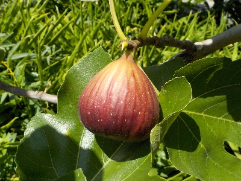
我が家で実が付いてるイチジクはこれ1本だけです。
挿し木のイチジクを、秋に地植えして増やすつもりです。
植えたら枯れ。植えたら枯れの繰り返しですが、そんなもんなんだろうな。
【イチジクTOP】
【果物TOP】
【園芸TOP】
2024/08/26
大きなイチジクの木が１本枯れました。
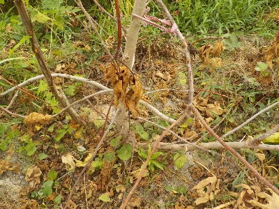
テッポウムシが原因だと思います。残念ですね。
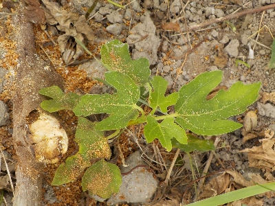
株本に枯れていない小さい枝がありました。
これが大きくなってくれるといいんだけどな。
【イチジクTOP】
【果物TOP】
【園芸TOP】
2023/12/24
大きくならなかったイチジクを採りました。
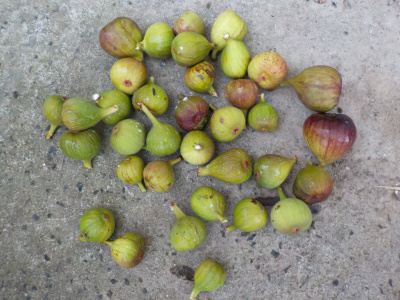
煮たら食べれるかもと思い収穫したんですが、硬くてほとんどが使えませんでした。
でも何個かは美味しく食べれたので良かったです。
【イチジクTOP】
【果物TOP】
【園芸TOP】
2023/12/10
冬ですが、熟れたイチジクがあったので食べました。
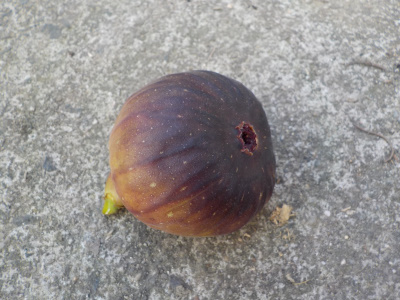
イチジクの色が濃ゆくなってて、ほどよく柔らかい個体がありました。
もうイチジクを収獲する時期じゃないですが、熟れていそうなので試しに食べてみました。
味が少し薄かったですが、普通に美味しくいただけました。食べて良かったです。
【イチジクTOP】
【果物TOP】
【園芸TOP】
2022/06/11
挿し木のイチジクを地面に植えました。
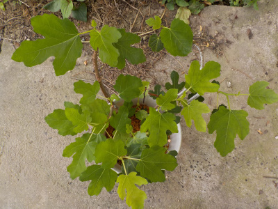
挿し木のイチジクから葉っぱが次々出ています。
もう地面に植えても大丈夫そうです。
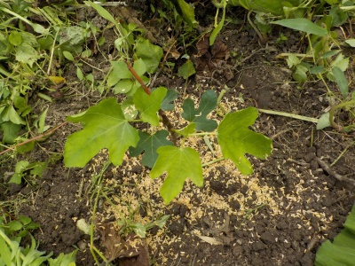
水やりが面倒なので、早く梅雨になって欲しいです。
今日は5本植えました。まだ何本か残っていますが、植える場所がないな。
【イチジクTOP】
【果物TOP】
【園芸TOP】
2022/05/29
イチジクにキボシカミキリがいました。
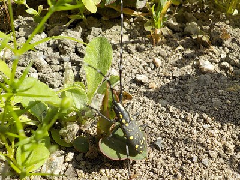
敵がいました。この虫の幼虫がテッポウムシです。
卵を産む前だったらいいんですが、どうでしょうね。
【イチジクTOP】 【果物TOP】 【園芸TOP】
2022/04/10
イチジクにガットサイドを塗りました。
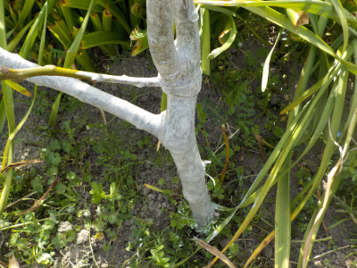
我が家のイチジクは去年沢山枯れました。理由は不明です。
これ以上減らさないように薬を塗りました。
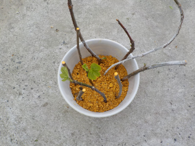
増やすように挿し木もしました。
水の管理が面倒なので底面給水鉢を使用しました。
【イチジクTOP】 【果物TOP】 【園芸TOP】
2021/11/21
イチジクにカミキリムシがいました。
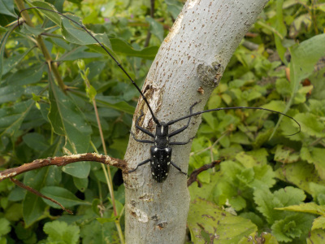
何かイチジクに悪いことをしていそう。
暖かくなったら農薬を塗ろうと思います。
【イチジクTOP】 【果物TOP】 【園芸TOP】
2020/05/02
イチジクにガットサイドSを塗りました。
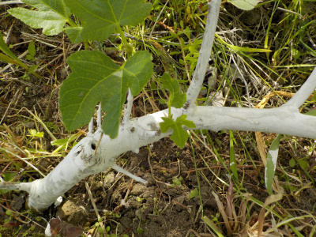
テッポウムシ対策で殺虫剤を塗りました。
これが役に立つといいですね。
【イチジクTOP】 【果物TOP】 【園芸TOP】
2019/09/23
蛾の好物っぽい感じがします。
イチジクって甘くて美味しいですよね。
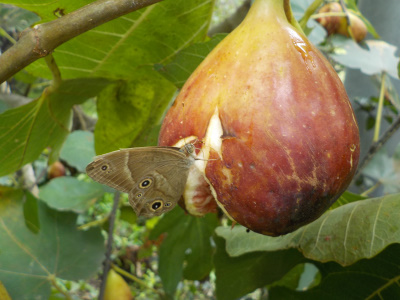
たぶん蛾も好きなんでしょう。

台風で枝が折れました。
イチジクの木って弱いですね。
【イチジクTOP】 【果物TOP】 【園芸TOP】
2019/09/14
イチジクが急に大量収穫です。
ちょっと前までは少しずつだったんですが、今日は大量に収穫しました。
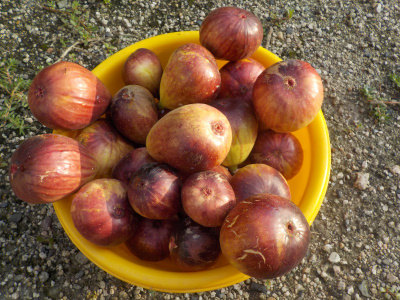
まだ熟れていないのや、小さいものもあるので食べるのに困るほどの量ではないです。
毎日コツコツ食べようと思います。
【イチジクTOP】 【果物TOP】 【園芸TOP】
2019/08/31
イチジク食べてます。
ちょっと前からイチジクを収穫しています。
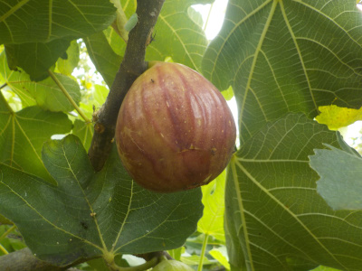がつの
今のところ、ちょっとずつ熟れてるので食べやすいです。
一度に沢山出来ないのはいいことだ。
【イチジクTOP】 【果物TOP】 【園芸TOP】
2018/07/28
イチジクにトンボがとまっていました。
周りに餌が沢山あるのかな。
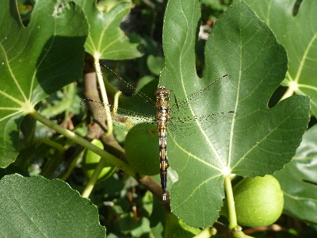
このイチジクの木はあまり剪定していないので大きいです。3ｍあるかな？
収穫が終わったらバッサリ切って小さくしたいです。
【イチジクTOP】 【果物TOP】 【園芸TOP】
2018/05/26
イチジクの挿し木を地におろしました。
挿し木がだいぶ成長したので地面に植えました。
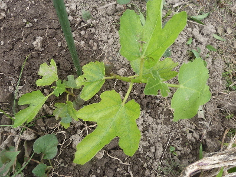
植え替えしてて思ったんでしが、根っこはあまり張らないんですね。
これで大丈夫？ってくらい少なかったです。
ほっといたら枯れそうなので、しばらくはまめに水やりをしようと思います。
【イチジクTOP】 【果物TOP】 【園芸TOP】
2017/09/03
イチジクの最盛期かな。
今くらいが一番イチジクが熟れる時期かな。
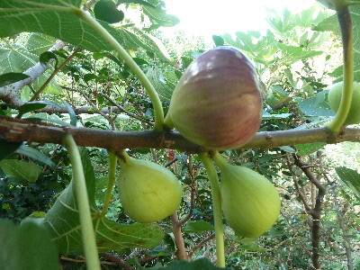
熟れたのから食べています。
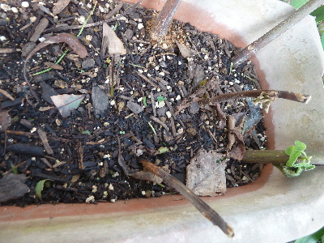
夏にイチジクを挿し木したんですが、失敗したようです。
みんな枯れてしまいました。なんでだろう。
時期が悪かったかな。次は冬に挑戦しようと思います。
【イチジクTOP】 【果物TOP】 【園芸TOP】
2015/09/27
イチジクの季節です。
収獲時期ですね。
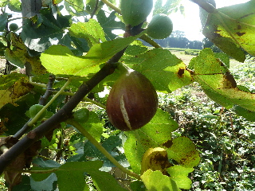
美味しかったです。
【イチジクTOP】
【果物TOP】
【園芸TOP】
畑仕事じゃないよ。
【おいしいものを食べよう。】【たくさん寝よう。】
【ソロ活をしよう!】【季節感のあることをしよう。】【動画視聴はほどほどに。】【当サイトの全てのコンテンツは無断転載禁止です。】